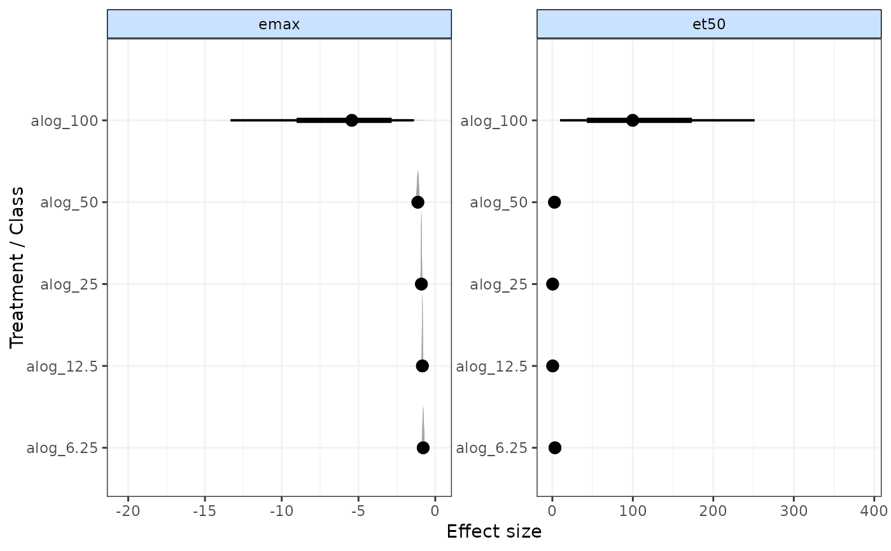
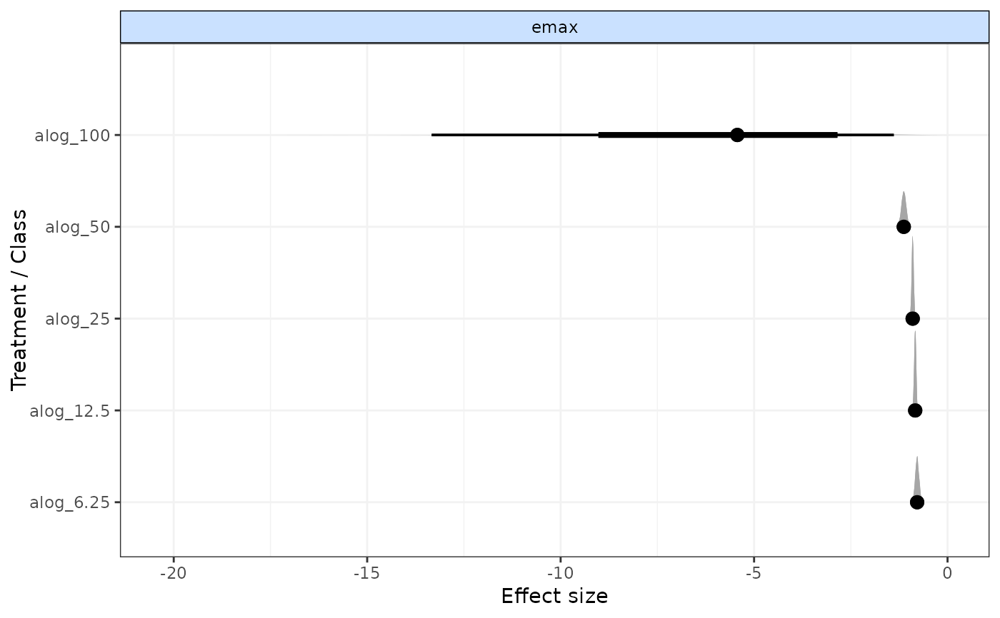

Forest plot for results from time-course MBNMA models
plot.mbnma.RdGenerates a forest plot for time-course parameters of interest from results from time-course MBNMA models.
Posterior densities are plotted above each result using ggdist:stat_:halfeye()
Usage
# S3 method for class 'mbnma'
plot(x, params = NULL, treat.labs = NULL, class.labs = NULL, ...)Arguments
- x
An S3 object of class
"mbnma"generated by running a time-course MBNMA model- params
A character vector of time-course parameters to plot. Parameters must be given the same name as monitored nodes in
mbnmaand must vary by treatment or class. Can be set toNULLto include all available time-course parameters estimated bymbnma.- treat.labs
A character vector of treatment labels. If left as
NULL(the default) then labels will be used as defined in the data.- class.labs
A character vector of class labels if
mbnmawas modelled using class effects If left asNULL(the default) then labels will be used as defined in the data.- ...
Arguments to be sent to
ggdist::stat_halfeye()
Value
A forest plot of class c("gg", "ggplot") that has separate panels for different time-course parameters
Examples
# \donttest{
# Create an mb.network object from a dataset
alognet <- mb.network(alog_pcfb)
#> Reference treatment is `placebo`
#> Studies reporting change from baseline automatically identified from the data
# Run an MBNMA model with an Emax time-course
emax <- mb.run(alognet,
fun=temax(pool.emax="rel", method.emax="common",
pool.et50="rel", method.et50="common"),
intercept=FALSE)
#> 'et50' parameters must take positive values.
#> Default half-normal prior restricts posterior to positive values.
#> Compiling model graph
#> Resolving undeclared variables
#> Allocating nodes
#> Graph information:
#> Observed stochastic nodes: 233
#> Unobserved stochastic nodes: 38
#> Total graph size: 4166
#>
#> Initializing model
#>
# Generate forest plot
plot(emax)

# Plot results for only one time-course parameter
plot(emax, params="emax")

# }